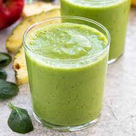

Spinach Tropical Smoothie

Description
A great smoothie after a workout. Full of nutrients and protein, it can be used as an
entire meal if you're in a rush. I typically drink this when I'm at home or on the go,
it tastes great and smooth. The fruits used can be used interchangeably, but for this
recipe, we will use tropical fruits!
Ingredients
- Spinach
- Greek yogurt
- Tropical Blend (Strawberries, Mango and Pineapple)
- Milk (Normal, Oat, or Almond milk works!)
- Chia Seeds (Optional, extra protein!)
- Protein Powder (Optional)
Steps
- Using a blender, pour in your milk of choice.
- Add your ingredients, blend from a low speed and increase to high.
- Blend for 2-3 minutes until smooth.
- Pour into your glass and enjoy